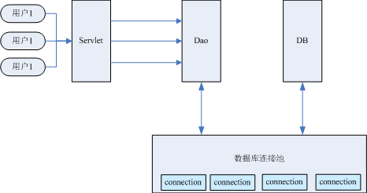

原文出处:本文由博客园博主冰湖一角提供。
原文连接:https://www.cnblogs.com/bingyimeiling/p/11953078.html
原文连接:https://www.cnblogs.com/bingyimeiling/p/11953078.html
什么是数据库连接池？
当系统使用JDBC技术访问数据库时会创建一个connection对象，而该对象的创建过程是非常消耗资源的，并且创建对象的时间也特别长，假设系统一天有1万次的访问量，那么一天就会有1万个connection对象被创建，这极大的浪费数据库的资源，而且可能造成数据库服务器内存溢出，宕机。
为了解决以上问题，就引入了数据库连接池，它主要用来分配、管理、释放数据库的连接。系统启动的时候，数据库连接池首先会创建若干个（该数量可配置）connection对象，并将这些对象放入池中，当系统需要connection对象时，
数据库连接池会从池中分配一个事先创建好的connection对象给系统，当系统使用完毕或超时后，数据库连接池会将该connection对象重新放入池中。
这样就减少了创建connection对象所耗费的资源和时间，可以提高数据库操作的性能。
下图为数据库连接池原理图：

模拟编写一个数据库连接池
因为要用到数据库，所以需要将之前编写的JDBC相关的代码和jar包拷贝过来，创建一个SimpleConnectionPool类，里面需要实现下面三个功能：
1. 初始化一个数据库连接池，并向里面添加10个数据库连接；
2. 从连接池中获取连接；
3. 当程序用完连接后，需要将该连接重新放入连接池中。
需要注意：数据库连接池要保证线程安全！
/**
* 1. 初始化一个数据库连接池，并向里面添加10个数据库连接；
* 2. 从连接池中获取连接；
* 3. 当程序用完连接后，需要将该连接重新放入连接池中。
*/
public class SimpleConnectionPool {
//创建一个存放连接的池子，注意要保证线程安全
//因为要频繁的对数据库连接池取出和存放操作，所以使用LinkedList池子
public static LinkedList<Connection> pool = (LinkedList<Connection>) Collections.synchronizedList(new LinkedList<Connection>());
//在类加载后向数据库连接池中存放10个数据库连接
static {
try {
for (int i = 0; i < 10; i++) {
Connection con = DBUtil.getConnection();
pool.add(con);
}
} catch (SQLException e) {
e.printStackTrace();
}
}
//从连接池中获取连接
public static Connection getConnectionFromPool(){
Connection con = null;
//判断池子中是否还有连接对象
if(pool.size()>0){
con = pool.removeFirst();
}else{
//此时说明数据库连接池中没有可用的连接了
throw new RuntimeException("服务器忙，请稍后再试");
}
return con;
}
//当程序用完连接后，需要将该连接重新放入连接池中
public static void release(Connection con){
pool.addLast(con);
}
}public class DBUtil {
private static String driverClass="com.mysql.jdbc.Driver";
private static String url="jdbc:mysql://127.0.0.1:3306/map?useUnicode=true&characterEncoding=utf-8";
private static String userName="root";
private static String password="root";
static{
try {
//加载驱动
Class.forName(driverClass);
} catch (ClassNotFoundException e) {
// TODO Auto-generated catch block
e.printStackTrace();
}
}
public static Connection getConnection() throws SQLException{
return DriverManager.getConnection(url, userName, password);
}
}
欢迎关注微信公众号【Java典籍】，收看更多Java技术干货！
▼微信扫一扫下图↓↓↓二维码关注